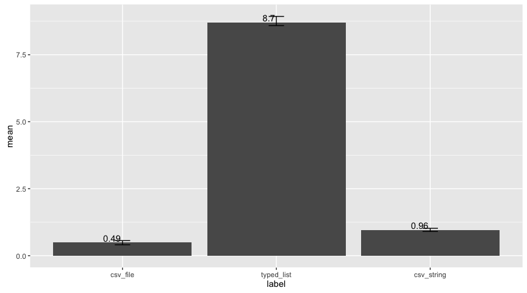

Spark Performance: Serializers
Setup
sparklyr:::spark_install(version = "2.0.0", reset = TRUE)
Initialization
library(sparklyr)
library(dplyr)
##
## Attaching package: 'dplyr'
## The following objects are masked from 'package:stats':
##
## filter, lag
## The following objects are masked from 'package:base':
##
## intersect, setdiff, setequal, union
library(ggplot2)
config <- spark_config()
config[["sparklyr.shell.driver-memory"]] <- "3G"
config[["sparklyr.shell.executor-memory"]] <- "1G"
logResults <- function(label, test) {
runTimes <- lapply(seq_len(3), function(idx) {
runTime <- system.time({
sum <- test()
})
as.data.frame(list(
label = label,
time = runTime[[3]],
sum = sum))
})
runTimes <- do.call(rbind, runTimes)
as.data.frame(list(
label = label,
min = min(runTimes$time),
max = max(runTimes$time),
mean = mean(runTimes$time)
))
}
Results
sc <- spark_connect(master = "local",
version = "2.0.0",
config = config)
serializers <- list(
"csv_file",
"typed_list",
"csv_string"
)
flights <- nycflights13::flights
dataset <- head(flights[!is.na(flights$tailnum),], 10000)
# warm up
r <- copy_to(sc, dataset, paste0("dataset_", serializers[[1]]), overwrite = TRUE, serializer = serializers[[1]])
r <- copy_to(sc, dataset, paste0("dataset_", serializers[[2]]), overwrite = TRUE, serializer = serializers[[2]])
r <- copy_to(sc, dataset, paste0("dataset_", serializers[[3]]), overwrite = TRUE, serializer = serializers[[3]])
allRuns <- lapply(
serializers,
function(e) {
results <- logResults(e, function() {
r <- copy_to(sc, dataset, paste0("dataset_", e), overwrite = TRUE, serializer = e)
})
colnames(results) <- c("label", "min", "max", "mean")
results
})
spark_disconnect(sc)
results <- do.call("rbind", allRuns)
Results chart
results %>%
ggplot(aes(label, mean)) +
geom_bar(stat = "identity") +
geom_text(aes(label = round(mean, 2)), vjust = -0.2, hjust = 1.1) +
geom_errorbar(aes(ymin = min, ymax = max), width = 0.1)

Results table
results
## label min max mean
## 1 csv_file 0.407 0.563 0.4920000
## 2 typed_list 8.588 8.930 8.7050000
## 3 csv_string 0.903 1.022 0.9626667